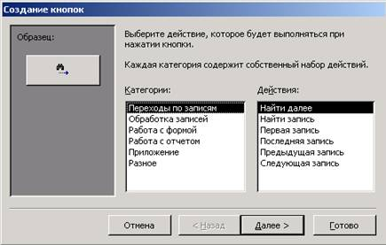
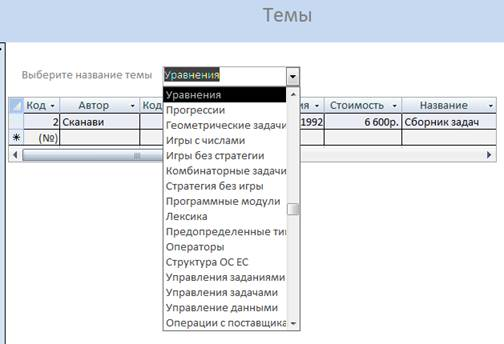

Краткие теоретические сведения
Обычно разработчик БД создает структуру
таблиц и запросов, но заполнением таблиц информацией не занимается. Для этого
есть специальные кадры, выполняющие функции наборщиков. Для упрощения их труда
разработчик базы может подготовить специальные объекты – формы. Форма
представляет собой электронный бланк, в котором есть поля для ввода данных.
Наборщик вводит данные в поля формы, и они автоматически заносятся в таблицы.
Данные в таблицу можно вносить и без помощи
форм, но существуют, по крайней мере, четыре причины, которые делают формы незаменимым
средством ввода данных в базу. Во-первых, малоквалифицированному персоналу
нельзя предоставлять доступ к таблицам (самому ценному из того, что есть в
базе). Представьте, что будет, если новичок «наведет порядок» в таблице банка,
хранящей расчетные счета клиентов. Во-вторых, разные люди могут иметь разные
права доступа к информации, содержащейся в таблицах. Например, один имеет право
вводить только имена и адреса клиентов, другой – только номера расчетных
счетов, а третий – только денежные суммы, хранящиеся на счетах. Для ввода
данных им предоставляют разные формы, хотя данные из форм будут поступать в
одну таблицу. В-третьих, ввод данных в таблицу – чрезвычайно утомительное
занятие. Уже после нескольких часов работы люди делают ошибки. Ввод данных в
форму можно автоматизировать таким образом, чтобы при вводе данных выполнялась
их первичная проверка. В-четвертых, информация для ввода в БД, как правило,
берется из бумажных бланков (анкеты, заявления, накладные, счета, описи,
ведомости, справки и т. п.). Экранные формы можно сделать точной копией
бумажных бланков, с которых происходит ввод данных. Благодаря этому во много
раз уменьшается количество ошибок при вводе и значительно снижается утомляемость
персонала.
Режимы работы.
Работа с формами может происходить в трех режимах: в режиме Формы, в режиме
Таблицы, в режиме Конструктора.
В режимах Формы и Таблицы можно осуществлять добавление, удаление и
редактирование записей в таблице или в запросе, являющемся источником данных
для формы.
В режиме Конструктора можно производить изменение внешнего вида формы,
добавление и удаление элементов управления.
Виды форм. В MS Access можно создать формы следующих видов:
1. Форма в столбец или полноэкранная форма, которая представляет
собой совокупность определенным образом расположенных полей ввода с
соответствующими им метками и элементами управления. Чаще всего эта форма
используется для ввода и редактирования данных.
2. Ленточная форма, которая служит для отображения полей группы
записей. Поля не обязательно располагаются в виде таблицы, однако для одного
поля отводится столбец, а метки поля располагаются как заголовки столбцов.
3. Табличная форма, которая отображает данные в режиме таблицы.
4. Форма главная/подчиненная, которая представляет собой совокупность
формы в столбец и табличной. Ее имеет смысл создавать при работе со связанными
таблицами, в которых установлена связь типа «один-ко-многим».
5. Форма Сводная таблица выполняется Мастером создания сводных
таблиц Excel на основе таблиц и запросов MS Access (Мастер сводных таблиц является
объектом, внедренным в MS
Access, чтобы использовать его, необходимо установить MS Excel). Сводная таблица представляет собой
перекрестную таблицу данных, в которой итоговые данные располагаются на
пересечении строк и столбцов с текущими значениями параметров.
6. Форма с диаграммой. В MS Access в форму можно вставить диаграмму,
созданную в приложении MS
Graph, которое является внедряемым OLE-приложением и может быть запущено из MS Access. С внедренной диаграммой можно
работать так же, как и с любым объектом OLE.
Структура формы.
Любой вид формы может включать следующие разделы:
- заголовок формы –определяет верхнюю
часть формы и может содержать текст, графику и другие элементы управления;
- верхний колонтитул – раздел отображается
только в режиме предварительного просмотра и обычно содержит заголовки
столбцов;
- область данных – определяет основную
часть формы, содержащую поля, полученные из источника данных;
- нижний колонтитул – раздел отображается
только в режиме предварительного просмотра в нижней части экранной страницы и
обычно содержит номер страницы, дату и т. д.;
- примечание формы – отображается внизу
последней экранной страницы формы.
Форма может содержать все перечисленные разделы или некоторые из них.
Как и любой объект БД, форма имеет свойства. Значения этих свойств для
всей формы, ее разделов или элементов управления задаются в окнах свойств
соответствующих объектов. Для отображения на экране окна свойств нужно нажать
кнопку Свойства на панели инструментов Конструктора форм или выбрать в
меню, появляющемся при нажатии правой кнопки мыши на объекте.
Окно свойств выделенного объекта содержит следующие вкладки: Макет,
с помощью которого задается макет формы; Данные, которые указывают
источник данных и некоторые его параметры; События, которые отображают
перечень свойств, связанных с программным управлением объектом; Другие,
которые задают перечень остальных свойств и Все – перечень всех
свойств.
Основные свойства формы это:
- подпись – позволяет задать название
формы, которое будет выводиться в области заголовка;
- режим по умолчанию – определяет режим
открытия формы (простая, ленточная, табличная формы);
- допустимые режимы – свойство, которое
определяет, можно ли с помощью команд меню Вид переходить из режима формы в
режим конструктора;
- свойства полосы прокрутки, область выделения,
кнопки перехода, разделительные линии, кнопка оконного меню, размеров окна,
кнопка закрытия, кнопка контекстной справки, тип границы – определяют,
будут ли выводиться эти элементы в окно формы;
- свойства разрешить добавления, разрешить удаления, разрешить изменения
– определяют, можно ли пользователю редактировать данные через форму. Эти
свойства могут принимать значения Да/Нет;
- ввод данных – определяет режим открытия
формы и принимает значения Да/Нет. Режим Да – открытие формы только для
добавления новых записей. Режим Нет – просмотр существующих записей и
добавление новых;
- блокировка записей – определяет способы
блокировки записей в режиме многопользовательской работы с базой данных.
Режимы создания. Для
создания форм используются следующие возможности:
1. Автоформа – автоматизированное средство для создания форм
трех стандартных типов: в столбец, ленточная, табличная. При этом в форму
вставляются все поля источника данных.
2. Мастер форм – программное средство, которое позволяет создавать
структуру одного из трех стандартных типов формы в режиме диалога с
разработчиком формы. При этом в форму вставляются выбранные пользователем поля
из источника данных.
3. Конструктор форм – позволяет конструировать форму пользователем
в окне Конструктора форм.
Самым удобным способом создания новой формы является следующая
технология: форма создается с использованием автоформы или Мастера форм, а
затем дорабатывается в режиме Конструктора.
Источником данных формы являются одна или несколько связанных таблиц
и/или запросов.
Работа с элементами управления. Элементом управления называют любой объект формы или отчета, который
служит для вывода данных на экран, оформления или выполнения макрокоманд. Элементы
управления могут быть связанными, вычисляемыми или свободными.
Связанный (присоединенный) элемент управления присоединен к полю
базовой таблицы или запроса. При вводе значения в связанный элемент управления
поле таблицы текущей записи автоматически обновляется. Поле таблицы является
источником данных связанного элемента управления.
Вычисляемый элемент управления создается на основе выражений. В
выражениях могут использоваться данные полей таблицы или запроса, данные
другого элемента управления формы или отчета и функции.
Свободные элементы управления предназначены для вывода на экран данных,
линий, прямоугольников и рисунков. Свободные элементы управления называют также
переменными или переменными памяти.
Все элементы управления могут быть добавлены в форму или отчет с
помощью панели инструментов, которая автоматически появляется при работе с
формой или отчетом в режиме Конструктора. Размеры разделов и размеры рабочего
поля формы можно изменять с помощью мыши.
В автоформах обычно присутствуют элементы
управления двух типов: связанное поле и присоединенная надпись. Содержание присоединенной
надписи совпадает с названием связанного поля, но это можно и изменить.
Редактирование форм состоит в создании новых
или изменении имеющихся элементов управления, а также в изменении их взаимного
расположения.
Например, создадим с помощью Мастера форму на
основе какой-нибудь таблицы БД «Библиотека». Мастер не заполняет раздел
заголовка. Поэтому, перетащив вниз разделительную границу между заголовком и
областью данных, можно освободить место для создания надписи. На панели
элементов управления для создания заголовков существует элемент Надпись.
Выбрав его и установив в нужном месте раздела заголовка, получим текстовую
рамку, в которую можно вводить произвольный текст.
Для форматирования элемента управления его
надо сначала выделить. При выделении элемента управления вокруг него образуется
рамка, которая содержит восемь маркеров (по углам и по центрам сторон рамки).
Рамку можно растягивать или сжимать методом перетаскивания границ. При
наведении на маркер указатель мыши меняет форму, принимая вид открытой ладони.
В этот момент рамку можно перемещать. Когда объект выделен, можно изменять
параметры шрифта, метод выравнивания текста и другие элементы форматирования,
доступные через соответствующую панель инструментов MS Access. Если щелкнуть на выделенном элементе
правой кнопкой мыши, откроется его контекстное меню, в котором имеются
дополнительные возможности изменения оформления.
Создание и редактирование связанных полей. Для создания связанных полей
используется элемент Поле на панели инструментов. При создании
связанного поля вместе с ним одновременно образуется еще один элемент
управления – Присоединенная надпись. Она перемещается вместе со
связанным полем и образует с ним единое целое. Оторвать поле от присоединенной
надписи позволяет левый верхний маркер рамки, при наведении на который
указатель мыши принимает форму указательного пальца. В этот момент связанное
поле можно оторвать от присоединенной надписи и перемещать отдельно.
Если перемещать элементы управления и
изменять их размеры с помощью мыши не очень удобно, то используют для этой цели
клавиши перемещения курсора в комбинации с SHIFT или CTRL. В первом случае (с
SHIFT) происходит изменение размеров элемента управления, а во втором (с
CTRL) – изменение его расположения. Чтобы элементы управления
располагались в форме ровными рядами, существуют специальные команды
выравнивания. Сначала надо выделить группу элементов управления (группа
выбирается при нажатой клавише SHIFT), а потом применить команду Выровнять
и выбрать метод выравнивания.
Элементы управления формы. При создании формы вручную элементы
управления размещают на ней так, как удобно проектировщику. Кроме рассмотренных
выше элементов управления, существуют следующие:
1) Переключатель (группа переключателей) – с ними можно связать команды, например,
выполняющие фильтрацию;
2) Флажок – действуют
аналогично переключателям, но, в отличие от них, допускают множественный выбор,
удобны для управления режимами сортировки данных;
3) Список
– может содержать фиксированный
набор значений или значения из заданного поля одной из таблиц, позволяет не вводить
данные, а выбирать их из списка;
4) Поле со списком – применяется
так же, как и список, но занимает меньше места в форме, поскольку список
открывается только после щелчка по кнопке выбора;
5) Кнопка – с
каждой можно связать команду, например, команду поиска записи, перехода между
записями и др.
6) Вкладки – позволяют
разместить много информации на ограниченной площади, на них размещают другие
элементы управления;
7) Поле объекта OLE – служит
для размещения внешнего объекта, соответствующего принятой в Windows концепции
связывания и внедрения объектов. Объектом, как правило, является иллюстрация,
например фотография, но это может быть и видеозапись, и музыкальный фрагмент, и
голосовое сообщение.
Существуют два типа полей для размещения
объектов OLE: свободная рамка объекта и присоединенная рамка объекта. В первом
случае рамка не связана ни с каким полем таблиц БД. Объект, находящийся в ней,
выполняет роль иллюстрации и служит для оформления формы. С присоединенной
рамкой связано одно из полей таблицы. В ней отображается содержимое этого поля.
Это содержимое может меняться при переходе от одной записи к другой.
Как правило, выбор любого элемента управления
и перемещение его на форму сопровождается появлением соответствующего Мастера.
Например, при выборе элемента управления Кнопка
открывается диалоговое окно Мастера кнопок, показанное на рис. 20.

Рис. 20. Окно мастера создания кнопок
Подстановка данных из родительских таблиц в поля внешних ключей
дочерних. Таблица
«Выдача книг» формируется на основе ключевых полей других таблиц и имеет
следующий вид (табл. 7):
Таблица 4 - Таблица «Выдача книг»
|
Код выдачи |
Код
читателя |
Код
книги |
Дата
заказа |
|
1 |
1 |
1 |
01.09.96 |
|
2 |
1 |
2 |
01.03.97 |
|
3 |
1 |
5 |
20.04.97 |
|
4 |
2 |
1 |
04.11.95 |
Очевидно, что такой вид таблицы неудобен для
заполнения. В MS Access предусмотрены элементы управления,
позволяющие привести таблицы к виду, представленному в табл. 8:
Таблица 5 - Таблица «Выдача книг»,
форма для заполнения
|
Код выдачи |
Код
читателя |
Код
книги |
Дата
заказа |
|
1 |
Минкевич |
Беспалько |
01.09.96 |
|
2 |
Минкевич |
Сканави |
01.03.97 |
|
3 |
Минкевич |
Грибанов |
20.04.97 |
|
4 |
Гуляев |
Беспалько |
04.11.95 |
Рассмотрим привязку информации на
примере таблиц «Читатели» и «Выдача книг». Нужно, чтобы значения поля Код
читателя (числовой тип данных) таблицы «Выдача книг» заменялись соответствующими
значениями поля Код читателя таблицы «Читатели» (тип данных «Счетчик»).
Для этого нужно открыть таблицу «Выдача книг»
в режиме Конструктора, выбрать поле Код читателя и перейти в нижней
части окна на вкладку Подстановка. Выбрать тип элемента управления Поле
со списком. В списке свойств в качестве Источника строк выбрать таблицу
«Читатели». Таблица «Читатели» содержит поля Код читателя, Фамилия,
Имя, Отчество, Адрес, Домашний телефон. При оформлении
выдачи книги достаточно видеть, например, поля Фамилия и Домашний
телефон. Для этого в строке Ширина столбцов вводятся нулевые
значения размеров тех столбцов, которые отображать не планируется. Окно
параметров подстановки в данном случае будет иметь вид (рис. 21).
|
Тип
элемента управления |
Поле
со списком |
|
Тип
источника строк |
Таблица
или запрос |
|
Источник
строк |
Читатели |
|
Присоединенный
столбец |
1 |
|
Число
столбцов |
6 |
|
Заглавия
столбцов |
Да |
|
Ширина
столбцов |
0см;
3см;0см; 0см; 0см; 4см |
|
Число
строк списка |
8 |
|
Ширина
списка |
5см |
|
Ограничиться
списком |
Да |
|
Разрешение
нескольких значений |
Нет |
|
Разрешить
изменение списка значений |
Нет |
|
Форма
изменения элементов списка |
|
|
Только
значения источника строк |
Нет |
Рис.
21. Параметры подстановки для поля «Код читателя»
Аналогично настраиваются свойства других
связанных полей.
На практике структуры таблиц изменяют редко,
так как работают с данными через формы. Поэтому можно в Конструкторе форм заменить
элемент управления Поле на Поле со списком и установить в окне свойств
последнего параметры подстановки аналогично рассмотренному примеру.
1. Подставить реальные данные о читателях (Фамилия, Имя,
Отчество и Домашний телефон), о книгах (Название, Автор)
в таблице «Выдача книг»; об издательствах (Название, Город) в таблице
«Книги», о книгах (Название, Автор) в таблице «Темы».
2. Создать автоформы по всем таблицам БД «Библиотека», доработать
их в режиме Конструктора, изменяя макет формы в соответствии с содержимым полей
и добавляя новые элементы управления (по своему усмотрению, но так, чтобы
использовались Флажки, Переключатели, Списки, Объекты
OLE).
3. Создать форму для просмотра и печати отчетов по ранее выполненным
видам запросов. Для этого выбрать из лабораторных работ №3 и №4 пять запросов,
по одному каждого вида (условный, итоговый, параметрический, перекрестный,
запрос на объединение).
4. Создать в Конструкторе две новые формы на основе необходимых
полей таблиц БД «Библиотека», которые позволят:
а) осуществлять в наиболее удобной форме оформление нового заказа на
книги (предусмотреть выбор существующего читателя из списка или добавление
нового в таблицу «Читатели» с возвратом к оформлению заказа; в поле Дата
заказа использовать календарь или текущую дату по умолчанию);
б) осуществлять выбор из Поля со списком интересующей темы и
вывод с помощью элемента управления Подчиненная форма информации о
соответствующей книге, как показано на рис. 22.

Рисунок 22.
Работа с подчиненной формой
5. Создать главную форму, с которой будет
осуществляться переход на все другие объекты БД. Предусмотреть возврат из второстепенных
форм на главную. На главной форме должны размещаться:
а) кнопка перехода на форму, с которой возможно просмотреть автоформы
всех таблиц БД «Библиотека» (переход между автоформами должен быть осуществлен
с учетом связей между таблицами БД);
б) кнопка перехода на форму просмотра отчетов по запросам;
в) кнопки перехода на формы из пункта 4;
г) кнопка выхода из приложения;
д) кнопка просмотра информации о БД и ее разработчике.
По желанию, главная форма может быть построена с помощью элемента
управления Вкладка.
6. Создать аналогичные формы к БД индивидуального задания, которые
позволят автоматизировать работу с данными: добавлять, удалять и модифицировать
записи в любой таблице без применения стандартных панелей MS Access,
запускать созданные запросы, просматривать и печатать отчеты, осуществлять
поиск и просмотр информации в подчиненных формах. Все коды связанных полей на
стороне отношения «многие» должны быть заменены при помощи подстановки на
данные исходных родительских таблиц.
1.
Что
представляет собой форма?
2.
В чем
заключается смысл использования форм?
3.
Поясните
алгоритм замены внешних ключей дочерних таблиц данными из родительских таблиц?
4.
В каких
режимах можно работать с формами?
5.
Какие
виды форм можно создать в MS Access?
6.
Какие
разделы могут входить в форму?
7.
Перечислить
основные свойства форм
8.
Какие
элементы управления называют связанными?
9.
Чем отличаются
и для чего используются элементы управления «поле» и «поле со списком»?
10. Что называется подчиненной формой, для чего
ее используют на практике?